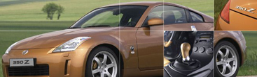
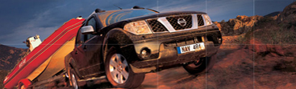
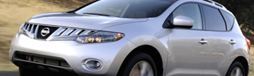
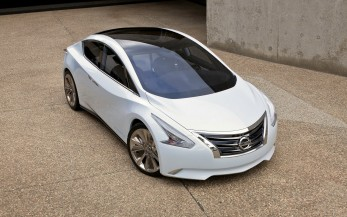

Главная |
||
|---|---|---|

Спорткар
Nissan 350ZNissan 350Z — спортивный автомобиль, выпускаемый корпорацией Nissan Motor Co. 350Z — пятое поколение автомобилей Nissan серии Z, начиная с Datsun 240Z 1969 года. Перейти |

Среднеразмерный внедорожник
Nissan PathfinderNissan Pathfinder — полноразмерный кроссовер японской компании Nissan, производство тогда ещё внедорожника, началось в 1985 году. У автомобиля существует четыре поколения. В современной линейке автомобилей Nissan, Pathfinder по размеру занимает место между Murano и Armada или Patrol. Перейти |

Среднеразмерный кроссовер
Nissan MuranoNissan Murano — среднеразмерный кроссовер японской компании Nissan, выпускающийся с 2002 года. Автомобиль разработан Nissan Design America из Ла-Хойя (Сан-Диего, Калифорния). Назван в честь одного из островов в Италии - Мурано. В 2010 году в США была представлена версия кабриолет. Перейти |
|  | ||